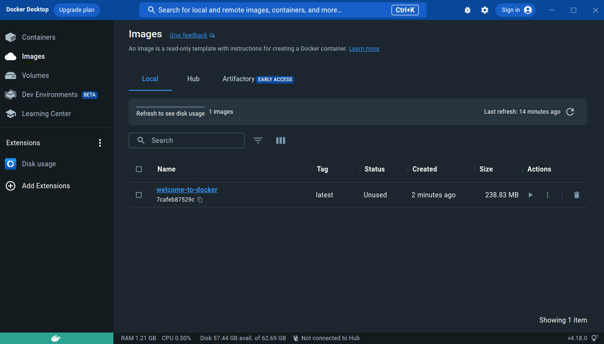
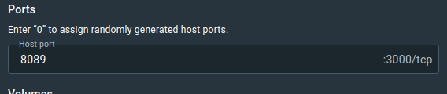
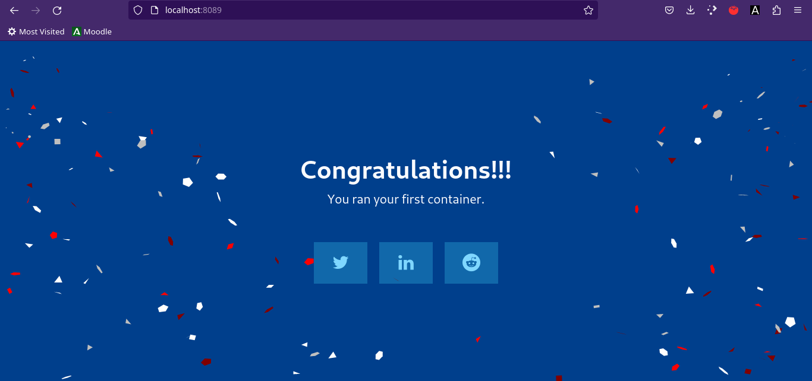

Abrimos Docker desde el lanzador de aplicaciones o desde la consola con el comando
systemctl --user start docker-desktop
La primera vez que lo abrimos nos pide que aceptemos los términos de uso. También nos mostrará un pequeño formulario para saber el uso que le vamos a dar a Docker. Una vez hecho esto podemos añadir contenedores.
Vamos a descargar el contenedor de bienvenida de Docker con git
git clone https://github.com/docker/welcome-to-docker
Entramos en la carpeta que hemos descargado de git y creamos un archivo Dockerfile. En el Dockerfile escribimos las instrucciones. Estas son las instrucciones que nos da Docker para su contenedor de bienvenida.
# syntax=docker/dockerfile:1
# Start your image with a node base image
FROM node:18-alpine
# Create an application directory
RUN mkdir -p /app
# Set the /app directory as the working directory for any command that follows
WORKDIR /app
# Copy the local app package and package-lock.json file to the container
COPY package*.json ./
# Copy local directories to the working directory of our docker image (/app)
COPY ./src ./src
COPY ./public ./public
# Install node packages, install serve, build the app, and remove dependencies at the end
RUN npm install \
&& npm install -g serve \
&& npm run build \
&& rm -fr node_modules
# Specify that the application in the container listens on port 3000
EXPOSE 3000
# Start the app using serve command
CMD [ "serve", "-s", "build" ]
Docker necesita una imagen para ejecutar el contenedor, la construiremos con el siguiente comando
docker build -t welcome-to-docker .
Al construir con éxito la imagen, aparecerá en Images en Docker Desktop.

Le damos al botón de run y en configuraciones opcionales ponemos el puerto en el que se va a desplegar el contenedor. Hecho esto le damos a run y se desplegará el contenedor.

Si entramos en localhost:8089 podemos comprobar que nuestro contenedor se ha desplegado con éxito.
